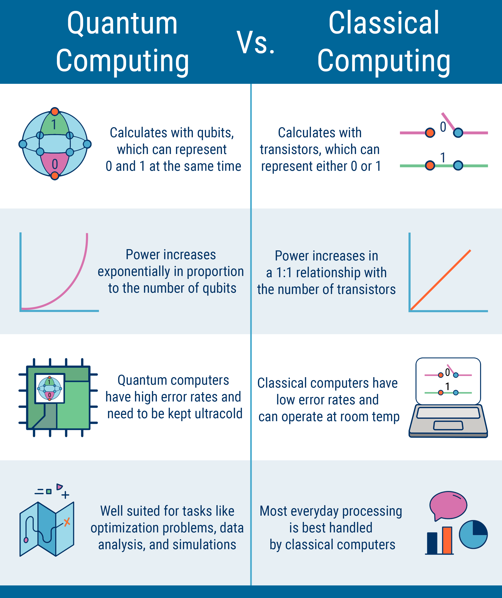
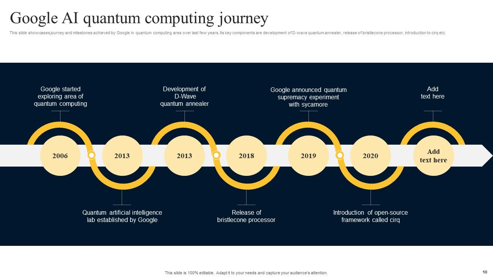
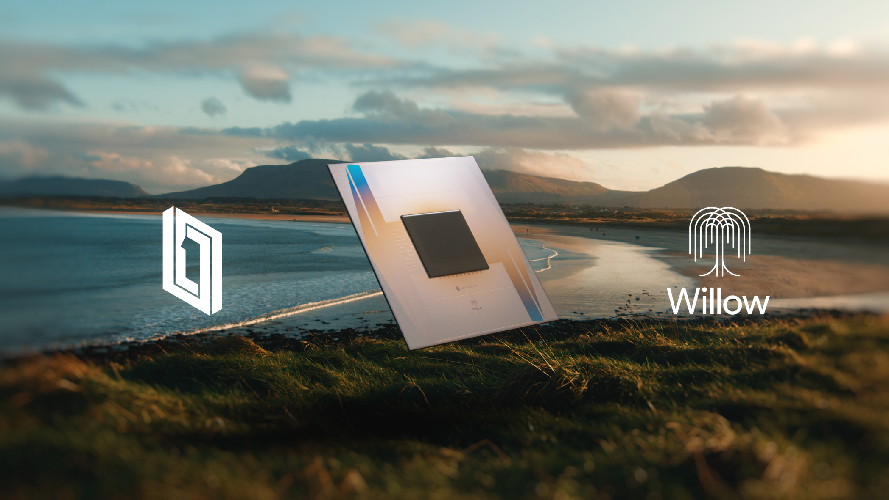

Did Google Willow chip meets multiverse?
Is Google Willow Quantum Chip the Future of Computing?
Google’s Willow Quantum Chip is paving the way for a quantum-powered future. With its remarkable 105- qubits capacity, it promises to solve computational problems that are beyond the reach of classical computers, all while making significant strides in error correction and scalability.
What is quantum computing?
Quantum computing (QC) represents a new frontier in computational technology, using the principles of quantum mechanics to solve problems that are practically impossible for classical computers. Unlike traditional binary bits that represent data as either 0 or 1, quantum bits, or qubits, leverage phenomena like superposition and entanglement. This enables quantum systems to process vast amounts of data simultaneously, making them revolutionary for fields like cryptography, material science, and artificial intelligence.
Quantum computer vs classical computers
Classical computers rely on transistors to process information in a linear and
sequential manner,
which is ideal for everyday applications but becomes inefficient for complex computations.
Quantum computers, by contrast, can evaluate multiple outcomes at once thanks to their ability
to operate in multiple states simultaneously.

For instance, while a classical computer might take centuries to perform certain calculations, a quantum system can solve them in seconds, providing solutions to problems involving septillions of variables. This distinction makes quantum systems particularly valuable for optimization and simulation tasks.
Quantum error correction
One of the major hurdles in quantum computing is error correction, as qubits are
highly sensitive
to environmental noise and interference. This fragility can result in computational errors that
compromise results.
Quantum error correction involves creating
redundancy by encoding quantum
information across multiple qubits. Google’s advancements in this area, particularly with the
Willow chip, demonstrate exponential
reductions in error rates as qubits scale, paving the way
for more reliable quantum systems capable of addressing practical problems.
Google quantum journey
Google has been a trailblazer in the quantum computing space, starting with its
2019 achievement
of quantum supremacy—proving that a quantum processor could outperform the world’s fastest
supercomputer on a specific task.
Since then, Google has pursued a rigorous roadmap aimed at building a fully functional,
error-corrected quantum computer. With investments in cutting-edge hardware, innovative
algorithms, and collaborations with research institutions, Google’s journey exemplifies the
potential of quantum technology to transform industries.

Google willow quantum chip

The Google Willow Quantum Chip is the culmination of years of research and development, featuring cutting-edge advancements in quantum processor design. With 105 qubits, the Willow chip is a testament to Google’s engineering ingenuity, designed to enhance qubit coherence and reduce error rates. Its architecture focuses on scalability, bringing the vision of a large-scale quantum system closer to reality. Moreover, the Willow chip showcases the potential for breakthroughs in computations involving massive datasets and intricate variables.
Willow chip performance
The performance of the Willow chip sets a new standard in quantum computing. By leveraging over 100 qubits, the chip can process calculations at speeds unimaginable for classical systems. For instance, tasks involving septillions of permutations can now be solved within minutes. The chip’s architecture incorporates enhanced quantum error correction, ensuring high accuracy and reliability even in complex simulations and analyses. This leap in performance positions Google as a leader in the quantum computing race.
Google quantum vision / roadmap